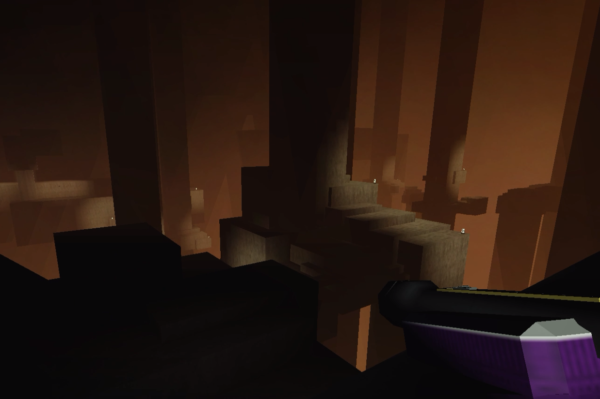

Description
Pillar Forest, a space filled with endless vertically aligned concrete pillars that extend infinitely into the void. The size of the level is currently unknown, so it is theoretically infinite.
Environment
Some of the pillars have platform wich can be connected by each other making bridges. Falling into the void lead to death.
Resources
- Unknown: More study required.
Threats
- Unstable architecture: One misstep can be fatal.
Entrances
Only know way get on the level for now is through hell maze.
Exits
TBA.
Additional Notes
Expedition requied nearest future.
